Portfolio Questions
Unit 2 - Introduction to Mobile Apps & Pair Programming
2.2 - I Have A Dream
1) In your own words, describe what event driven programming is. What event handler was used in the I Have a Dream app? How was it used?
Event driven programming is a kind of programming that the app responses to various user inputs such as touching, scrolling, shaking the phone, etc. The touch of a button is an event handler used in I have a Dream app. It was used to play sound in response to the touch of the button.
2) Is it possible to create an app without event driven programming? Explain.
It is possible to create an app, but it's functionality will be very limited. One example of a such app is a picture gallery app that shows different kinds of picture, but it can't do anything else such as receiving inputs from the user.
3) What elements and components make up the User Interface (UI) for the I Have A Dream app?
There are two visible elements, the picture of Martin Luther King and the play button. There is an invisible component called audio that plays the speech of Martin Luther King when the button is pressed.
4) What are some of the elements that make up the UI for a car? A vending machine?
A car's UI is made up of brake, suspension, steering wheel, and other stuff. A vending machien is made up of coin and bill area, buttons on the machine, and refund button.
2.3 - The Internet and the Cloud
1) In your own words, give a sentence that would explain to a friend the difference between the WWW and the Internet.
The WWW is an application that uses the internet, every browser connects to the WWW and retrieve or send data. The internet is a bigger term that includes every application that connects to internet.
2) (POGIL) List a beneficial effect and a harmful effect for a social media app that you discussed in your POGIL group. Are the effects on society, culture, or economics? Include a screenshot of the Venn diagram you made with your group.
A beneficial effect is that people who uses social media is able to connect with old friends that they haven't meet in a long time. One harmful effect is revealing self location. The beneficial effect is on individual fulfillment, and harmful effect is on safety.

3) (POGIL) If you were a developer of one of the social media apps that you discussed, how would you reduce the harmful effects?
I would reduce the harmful effects by letting the users set if they want to reveal their location or not.
2.4 - I Have A Dream, Part 2
1) What components make up the User Interface (UI) for this enhanced version of the I Have A Dream app?
This time the UI has 3 images and 2 audios. One picture of Malcolm X and Martin Luther King at the same stage, and one picture for each of Malcolm X and Martin Luther King. There are also two audios that is the speech of Malcolm X and Martin Luther King.
2) A computational artifact is something created by a human using a computer. We've just created a mobile app, which is certainly an example of such a artifact. Given examples from your own experience of computational artifacts that you've created -- images, videos, presentations, mash-ups -- and describe the software you used to create them.
I have created a few websites using google chrome and it's console and element menu. I have also created this portfolio with Microsoft Visual Studio Code.
2.5 - Mobile Devices and Apps: Hardware and Software
1) Give an example of a special purpose computer that you are familiar with and briefly describe its hardware and its software.
One special purpose computer is my calculator. The hardware is its chips that perform the calculation inside the chips. Its software is the one that takes the input such as number and operation and give it to hardware, then it returns the value and send to the digital screen to render it on the calculator.
2) Explain in your own words the difference between running your app by "Connecting to the Companion" and running your app by "Packaging" it.
Connecting to the Companion means the inventor sends the package to the mobile device and runs it base on the inventor app installed on the phone, after finish connecting the package would be removed and can not be access again with the mobile device. Packaging it means that the apk file is installed into the computer, which means the app is installed onto the mobile device, and it can be access anytime, but it can not be changed unless install again.
3) As we learned in this lesson, a byte is about the same amount of memory as a character, such as the letter 't'. There are approximately 7 million characters in all of the Harry Potter novels combined. How many bytes of memory would all of the Harry Potter novels take up? How many copies of the Harry Potter novels would fit on a 7 Gigabyte flash drive. (Remember 1 Gigabyte is 1 billion bytes.)
Since all the books combined have 7 million characters, it needs 7 megabytes of data to store all 7 books. One billion bytes are equal to 1000 megabytes, 7 billion bytes are equal to 7000 megabytes. 7000 divided by 7 is 1000, so the flash drive can fit 1000 series of Harry Potter novels.
2.6 - Algorithm Basics

1) For the robot in the maze above, is CAN_MOVE(forward) true? Is CAN_MOVE(right) true?
CAN_MOVE(forward) is true because the arrow is pointing a white square. CAN_MOVE(right) is false because the right of the arrow is a black square.
2) Write an algorithm using the 4 commands above to navigate the robot through the maze to reach the gray square. You can pretend that one of you is the robot and walk through your algorithm with your fingers on the maze. Are there commands that are repeated in your algorithm? Circle them.
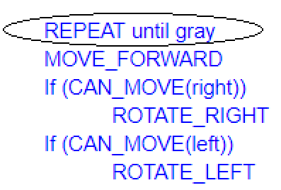
3) Let's replace the repeated commands with a repetition control structure. The following command can be used to repeat a block of commands (see image in 2.6):
Rewrite your algorithm above using Repeat n times control structures (substituting in a number for n) instead of repeating the MOVE_FORWARD command many times.
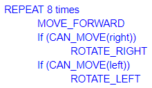
4) Write a more general algorithm to navigate a maze using IF commands and a REPEAT UNTIL GoalReachedcommand, which tests if the robot has reached the gray square goal.
a) Which part(s) of the algorithm above are selection control structures?
b) Which part of the algorithm above is a repetition control structure? Remember a control structure can consist of multiple statements.
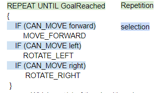
c) Does the algorithm solve the maze above and navigate the robot to the goal, the gray square? How many times does it need to run through the loop?
Yes, this algorithm solve the maze above to the gray square, and it needs to run the loop 8 times.
d) Create a maze this algorithm will NOT be able to solve! Include a description or a photo of your drawing of such a maze in your portfolio
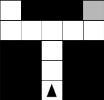
The robot would not be able to solve this maze because it would turn left at the intersection and stuck at the dead end.
5) (Portfolio) Write an algorithm for washing a stack of 10 items that are cups and dishes mixed together, where the rule is that the cups are washed in hot water and the dishes in cold water. Use simple commands like hot_wash and cold_wash. You may also use the control structures IF and REPEAT n times. Identify the parts of your algorithm that are examples of Sequence, Selection, and Repetition.

2.7 - I Have A Dream Projects
1) In this lesson, you created your own sound board app. Give a brief description of it here. Describe its theme, if it has one, and what particular sounds (music or speeches) it plays. Attach or embed your video.
Our project is call lazy cat, it is made up of a picture of cat and two differnet picture of part of cat. When you click on the cat, it reacts and plays a certain sound.
2) Describe how you designed your app's UI. What components does it use?
Since the requirement is that we need to include atleast 3 pictures into the app, we use 1 picture of the big cat and 2 parts of cat. It needs to be click on, so we made the buttons and set its image to the cats. We also include three different audio files into the component to make it play when needed.
3) Now that you've had some experience building apps in App Inventor, what do you think about programming. Is it a creative activity? In what ways does it allow you to express yourself?/
I think programming is a creative activity because it allows me to create different things that I like. I am able to create things that can impress the others.
2.8 - What is Abstraction?
1) Write an explanation of abstraction, including at least one example, in your own words.
Abstraction is taking something hard to understand and simplify it with vague and less detail word. One example of abstraction is to simplify gaining 1 apple after another as 1 + 1 in mathematic.
2) Give 2-3 examples of abstractions in everyday life not identified in the lecture.
One example of abstraction is our mobile devices, such as my phone. I know my phone can do calculation, render pictures, and show videos, but I don't actually know how it does it, I just know it does it. Another example of abstraction is cupnoodle. Cupnoodle has a lots of different flavors, preparing methods, and taste. I don't know what it is exactly made up of but when I heard the word cupnoodle I know it has to be somekind of noodle.
3) Consider an example of software, a mobile application, or a web site and explain how it is an abstraction.
The Window system is an abstraction. It provides user with graphic interface and file systems. It is an abstraction because it hides all the coding part, or communicating with the hardware part, and instead it turns them into interfaces that are easy to use by normal users.
2.9 - Binary Numbers
1) Figure out what decimal value is represented by the following binary number 0011 1010 0011
1 + 2 + 32 + 128 + 256 + 512 = 931
2) Represent the decimal value 517 as a binary number.
1000000101
3) The binary number system is base 2 and has 2 digits. The decimal number system is base 10 and has 10 digits. The octal system is base 8. How many digits does it have? What are they, starting at 0?
They have 8 digits, 01234567.
4) Suppose the number 523 is a base-8 octal number. What would its value be in decimal? In binary?
3 * 1 + 2 * 8 + 5 * 64 = 339. 101 010 011 in binary.
5) Challenging: Convert the base-5 number 243 into decimal.
3 * 1 + 4 * 5 + 2 * 25 = 73
2.10 - Hardware Abstractions: Logic Gates
1) (POGIL) Insert a screenshot of your Logicly diagram for the Exclusive-OR circuit below.
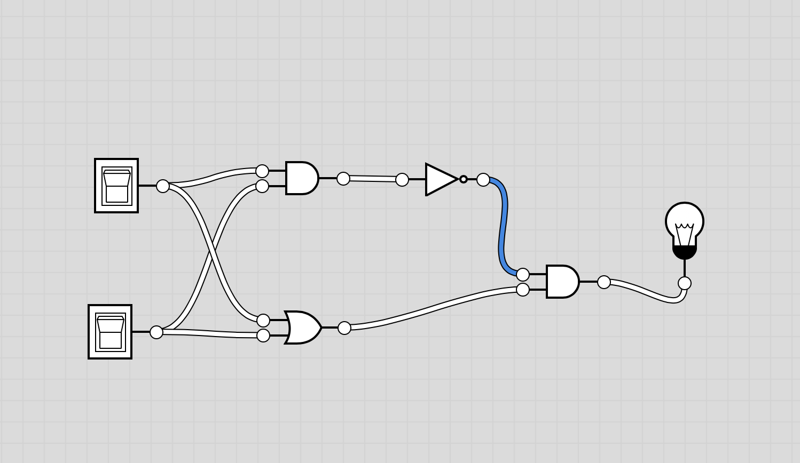
2) (POGIL) Consider these three things: The OR gate (i.e., the physical circuit), the Boolean OR function (as defined by its truth table), and the OR symbol. How would arrange them from most abstract to least abstract? And what criterion would you use to determine their order?
OR symbol, Boolean OR function, The OR gate. I determine their order by seeing that the symbol is most abstract because it only symbolize the gate itself. The truth table defines the inputs and outputs of the gate. The gate itself is least abstract because it actually functions in circuit.
3) Consider these three things: A binary digit (e.g., 1 or 0), the flip-flop circuit diagram (), and the flip-flop circuit (i.e., the physical circuit). How would you arrange them from most abstract to least abstract and what criterion would you use to determine their order?
Binary digit, flip-flop circuit diagram, and the physical circuit. I see the number just represent the state of the circuit with a number. The diagram represents the functionality of the circuit. The actual circuit can actually run.
2.11 - Impacts of CS: The Digital Explosion
1) What is a bit and what does it mean to say that "it's all just bits"? (Koan 1) Give examples of the things today that are stored in bits?
A bit stores 0 and 1, and with lots of bits, they can store lots of data. One thing that is stored in bits are this portfolio here because it's just all bits translated by machines into readable websites that human can read.
2) Describe, in your own words, Moore's Law.
Moore's law states that the number of transistors on a microchip doubles every two year, which shows the speed of increasing technology.
3) Give an example of how the digital explosion is "neither good nor bad" but has both positive and negative implications.
An example of digital explosion is the development of computer. It has increases the calculating speed of human, but people use social media to attack other people mentally too.
4) Find and summarize a news article that talks about the positive or negative impacts of a computing innovation. Is the technology itself positive or negative? Or have people used the technology in positive and/or negative ways? Don't forget to LINK to your article!
One new computing innovation is the break through of the quantum computer technology. The technology is positive on the surface because quantum computer is able to increases the computing speed by a lot more compare to traditional computer. The negative side of quantum computer is that it is able to break the most encryptment methods available, so it can also use in negative side.
Unit 3 - Creating Graphics & Images Bit by Bit
3.2 - Paint Pot Tutorial
1) Explain the meaning of the statements shown here, both in AP CSP pseudocode and App Inventor. For example, suppose the variable X has the value 10 before the statement is executed. What value would it have after the statement is executed?

This statement means to increase x by 1. If x is 10 previously, then it would be 11 after it was executed.
2) One aspect of abstraction is that it helps to reduce details to focus on what's relevant. How does the use of a variable, such as dotsize, instead of a value, such as '5', help to reduce detail and focus on what is essential in this program?
The variable dotsize represents the actual dotsize helps reduce detail because the actual dotsize is a number, but the number itself doesn't tell people that it means the dotsize. This is why using a variable to represent it is more abstract because it means more than the number itself.
3.3 - Representing Images
1) Decode this message by converting it from binary to ASCII: 1000001 1110000 1110000 0100000 1001001 1101110 1110110 1100101 1101110 1110100 1101111 1110010 0100000 1010010 1001111 1000011 1001011 1010011 0100001 You can use this chart to help you:
It means App Inventor ROCKS!.
2) Describe what it means to say that JPEG is a lossy compression technique and whether or not it affects the quality of camera pictures.
JPEG is a lossy compression means that some datas are lost during the compression. It would affect the quality of camera pictures on a small level. This means that if the image was zoomed in, some pixels would look blurry.
3) Give a specific example of a binary sequence that can represent more than one type of data -- e.g., a number, a color, a character -- and describe how to interpret its different values.
01000011 can means the letter C, a dark red color, and hex decimal of 43, and decimal number of 67. When this value is interpret differently, it means different things.
3.4 - Paint Pot Projects
1) For enhancement #5 (the "If Block Exercise") give a brief description of your solution to this problem. PROVIDE A SCREENSHOT OF YOUR APP'S CODE -- the revised blocks -- and describe how the if/else block works to solve the problem in this case. If appropriate, include a description of any significant problems or bugs you encountered in solving this problem. App Inventor now has a Download Blocks as Image feature (right click on the white space in the blocks editor to choose) that also can be used to take a screenshot of all of your code or the Windows snipping tool can be used.
My solution is if pen size is less than 0, then set pen size to 0. The if else block solve the problem because pen size needs to set to 0 only if pen size is less than 0 after pen size was decreases.

2) When you use the Camera component to take a picture as the Canvas background, explain why the picture goes away when the app is restarted. HINT: Think about the different hardware components we talked about in an earlier lesson and where on the device the picture is stored. What do you think could be done to prevent the picture from disappearing when the app is restarted?
The picture goes away because the picture is stored in RAM, so it goes away once the memory that stores the picture is not used anymore. The picture can be used again if it was stored on the hard drive as part of the data of the app so the user can pull it out to use it again.
3.5 - Paint Pot Refactoring and Procedural Abstraction
1) The Wikipedia article on refactoring talks about code smell and one motivation for engaging in refactoring. What is code smell? Describe briefly two examples of "code smell" and how refactoring would eliminate them.
Code smell is source code that does not follow development procedure and restrict the ability in further developments in the future. One example of code smell is the multiple usage of same piece of code in different area. Refactoring can eliminate this smell by setting up functions that would be used to call them once and for all. Another example of code smell is excessive long line of code. Refactoring can remove this problem by separating one line of code into different lines with comments.
2) Insert a screenshot of the procedure from your app below.

3) What are the advantages of using procedural abstraction? Name at least 2 advantages.
One advantage of procedural abstraction is that it simplifies multi-step algorithm into a single function call which simplifies the code. Another advantage is a procedural abstraction is able to simplify the calculation of mathematical concept that certain number such as the median or the mean of a list of number can be calculated by the procedure.
3.6 - Error Detection
1) (POGIL) Describe an algorithm for identifying the card that was flipped.
The algorithm is to check every row first to see if any of the row has odd number of face-up cards. After finding that row, then search in column to see if any column has odd number of face-up cards in that row. Then the one that has odd number of face-up card in that row and column is the error.
2) (POGIL) The card "trick" shows that it is always possible to identify the card that was flipped as long as only one card was flipped. Would it be possible always to determine if an error occurred if two cards were flipped?
It is possible to identify the error if two cards are fliipped, but it is not possible to fix it on it's own because there are possibilities of diffrerent kinds of error.
3.7 - Parity Error Checking
1) Explain how the error card trick from the Error Detection lesson uses a parity scheme. Was it an even or odd parity scheme?
The card trick uses even parity scheme by placing cards base to make the rows and column to have even number of face up and down cards.
2) What are some of the limitations of using parity bits for error detection?
One limitation of using parity bits are that more space is needed for the parity bits to exist. Another limitation is that parity bits are in no use if the datas are corrupted on a large level.
3) Another type of error detection is a check sum. Research what a check sum is and then describe it in your own words. Can a check sum identify where an error occurs?
Check sum is a type of parity scheme that adds the sum of the data to the end of the data. This method can detect an error but can not know the exact position of the error.
4) (Optional) Explain in your own words the difference between error detection and error correction. Describe how the error correction process used in the video above allows the computer to fix errors.
Error detection detects the existance of an error but is not able to fix it. Error correction is able to spot the error and correct it to the right thing. The error correction process allows computer to fix errors on it's own with parity bits.
3.8 - Map Tour Tutorial
1) How are lists used in this app? Why is a list a useful data abstraction or an abstract data type (ADT) in programming? Is it easy to add new destinations to the tour?
List is used to store places and longtitude and latitude. It is a good abstraction because it simplifies datas of different kind into one variable. With list, it is very easy to add new destinations because it can go and check one by one.
2) How do APIs simplify complex programming tasks? Pick an app that you use on your device (e.g. Twitter, Google Maps) and see whether it provides an API and some of the functions you can control with it. Describe your results below.
API simplify tasks by making the connection between client and server easy. One API is the google maps API where it can show different location on the map with names by using longtitude and latitude.
3) How is GPS used in this app? Do some research to find out how GPS works and describe it here in a couple sentences.
GPS is used to locate the locations on Earth. GPS uses multiple satellites to communicates with the device to get an accurate location point of a person on the planet. The phone first send signals to different satellites and they return the location of themselves. Four satellites are able to determine the location of a device accurately by using the location infomation.
4) Insert screenshots of the enhancements that you made below and describe how they work.
It works by removing a specific value in the index the user chosed and remove the index in places variable. It also remove the value in the position variable which stores the longtitude and the latitude.

3.9 - Map Tour with Tiny DB
1) What does it mean to say that data is 'persistent'?
Data is persistent if it can be stored on a device and data would not be lost if electricities are not provided. When the next time the app is opend, the data can be retrieve again as a variable.
2) What's the difference, in terms of where data is located, for data stored in a global variable vs. data stored in a database?
Data stored in a global variable stores in the computer's memory and would be lost when power is turned off. Data stored in a database is stored in the hard drive and is able to used again.
3) Include screenshots and explanations of your enhancements.
This enhancement is to redirect the user to the current location of the map. It uses the location sensor of the GPS system to see where the user is and locate the user and set the red marker onto the position.

3.10 Impacts of CS: Electronic Documents
Short Answer
1) What is metadata? Give an example of how a piece of metadata could be used to increase the usefulness of an image or document.
Metadata is data that shows the infomation about the document itself. It is used to see the compression method of the data and the dates when the data are created and edited.
2) What is a model?
A model is a way of using binary to store abstract infomations on digital device. Model is made up of binary so it can't be read directly and instead must render into different kinds of infomations.
3) What's the difference between a raster image and an ASCII representation of a text document?
Raster image is made of pixels on a 2D grid which every pixel has its own property such as position and color. ASCII representation of a text is just 1D list of numbers that represent different characters.
4) What are filename extensions? What are they used for?
Filename extensions are letters after the document name to identify the special type of compression method or data format it represents. They are used to identify which method should be used to decode the file into something human readable.
5) What is lossless representation? What is lossy representation? What are the trade-offs in using each representation?
Lossless representations are compression format that no data is lost. Lossy representations are compression format that some data is lost. Lossy format is usually smaller in size but some minor datas might be lost.
6) What is steganography and what is it used for? Describe in your own words the steganography algorithm used in the activity.
Steganography is the usage of hiding infomation in other kinds of infomation. This activity use the algorithm of determining the vowels of each sentence to encode a message with ASCII code.
7) What would you have to do to delete a document from your computer so that it could not possibly be read by anyone else?
I would have to physically destroy the hard drive so the document can't be retrieve by other people.
8) What is free and open source software? Provide an example.
Free and open source software is software that share the software and able to let other people collaborate and contribute into the software. Node.js is an example of an open source software.
Free Response
9) How has retouching become a controversial issue? Give an example.
Retouching is controversial because it may create false infomation to the people. One example is when an image of someone was manipulated so the person would look more beautiful or ugly to promote or degrade a person.
10) Would you rather own a camera (or camera phone) with a higher number of megapixels or lower? Explain.
I would rather own a camera with higher number of pixels because although high pixels camera take photos that take a larger space, it also has higher resolution. Since I often send my picture from my camera to my computer, the space problem doesn't matter.
11) Other than digital images, what might be an example of a computer model? Explain your answer based on the definition of a model.
An example of a computer model maybe the browser. The browser is a model because it decodes HTML files with are made up of 0s and 1s into a format that is readable by human on a webpage.
12) The code that implements App Inventor is open source and its impact on education is obvious. Find another example of open source software and describe its positive impact on education, business or society.
One example of open source software is linux. It impacted the society by its usefulness in server development, working environment. It greatly impacted the software industry, and its creation has led to the development of the Android operating system.
Unit 4 - Animation, Simulation, & Modeling
4.2 - Lights Off Tutorial
1) This app presents a new type of event which you haven't encountered before. What is that new event? How often is it triggered?
This event is the sprite on canvas moves every some time of the clock. It is triggered base on the phone's clock of a certain interval.
2) Consider the apps you've developed so far. Can you list all the different events your apps have responded to? What other events do you think an app can respond to? Explore some of the components in App Inventor and see what event handlers they have.
The events include touching button or sprite, clocks, phone shakes, taken picture, picking from a list. I think apps can respond to almost anything that was on the phone. I explored there was an event that triggers when screen is changed.
3) What are the advantages of writing procedures in programming? Use the procedures you wrote for this app as examples in your response.
Writing procedures help simlify the codes into abstractions that can be called multiple times throughout the app. The procedure I wrote was to set all texts in the game like scores into the variable, so every time a variable like score is changed, all the text would be updated.
4.3 - Lights Off Projects
1) Describe the purpose of each enhancement that you added to your app. Give brief descriptions of the enhancements and provide screenshots of important blocks and describe how you used them to solve certain programming problems. Include these descriptions in your write-up, below.
I made the picture of the imageSprite changes every time it moves into a differnet location. I used an abstraction with a procedure and random number generator to do this.
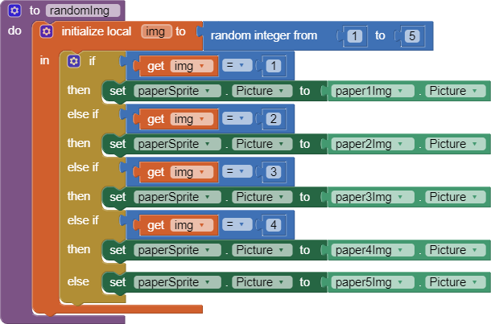
2) When the user touches an ImageSprite, both the Canvas.Touched and ImageSprite.Touched events are triggered. This is important for more complex games. For instance, suppose there are "good" and "bad" sprites in your game. If you hit one, you earn a point. If you hit the other, you lose two points. If you hit the Canvas and don't hit the ImageSprite, you lose 1 point. How would you code this?
The first functionality can be achieved by using two different ImageSprite with two different click event. The second one is a little more complicated. I suppose don't know which event handler would trigger first, so I will have two separate events of canvas click and sprite click. When one of them is clicked, the corresponding variable would be set to one and call the procedure that checks if both variable is on. When both variable is setted to true then it would awards a point, else it would lose point.
3) How do you speed up the movement of the ImageSprite? What is the fastest it could move?
The clock can be set to a lower time Interval, so it triggers faster. The fastest speed is about 10ms according to a race between my timer and mobile phone timer because the tablet's hardware can not process faster information with its crappy processor.
4.4 - Logo, Part 1
1) Include a screenshot of your app's face drawing, and the code involved, showing the use of a loop and a procedure. You can take a screenshot on most Android devices by pressing the power button and the volume down button and the same time and then emailing the photo from the gallery to yourself, or uploading the image to Google Drive. To practice for the Create task, describe how two of the algorithms (procedures that you wrote) in the code combine to form a bigger algorithm (the drawFace procedure).
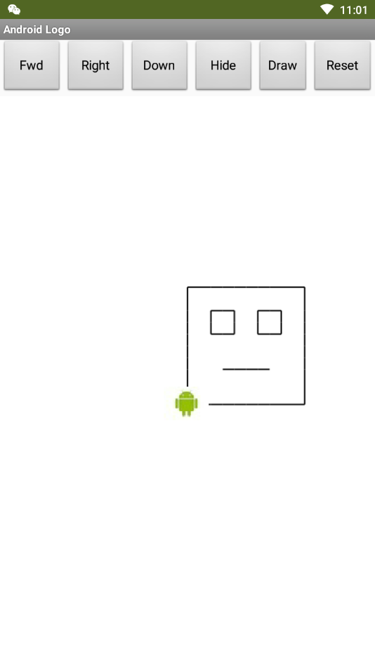
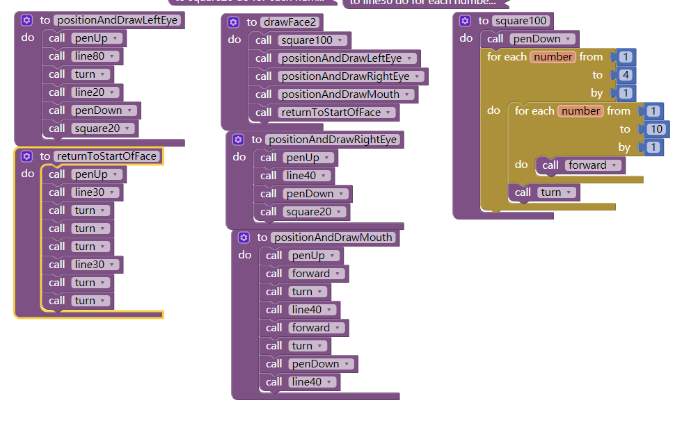
The square 100 algorithm first draws a rectangle, and then the draw left eye algorithm draws the left eye after the rectangle. They forms a bigger algorithm of draw face where all features are drawn.
2) Can you draw a triangle with this set of Logo commands? Discuss how or why not.
No, the rotation is limited to 90 degree angle, either to left or right. A triangle has a sum of 180 degree of all interior angle, so it's not possible to make a triangle with only 90 degree angles.
3) Discuss: If you were designing the Logo language, how would you change some of our basic commands so that it would be easy to draw a triangle and easier to draw other shapes -- i.e., what should the basic commands do that would make drawing easier.
I would add another function that is able to set the rotation angle, so it could draw any shape, even circle with very low angle.
4) What weaknesses do you find in using the procedures (the abstractions) we gave you -- forward, turn -- for drawing simple shapes? How would you change the definitions of these procedures to make it easier to draw shapes? Give a specific example that illustrates how a more powerful set of procedures would improve things.
It is difficult because there are a lots of repetitions involve in drawing a shape, multiple times of rotate, forward, and pen up pen down. I would let the procedure accepts input so it doesn't need that much repetition.
4.5 - Coin Flip Simulation Tutorial
1) Write an if/else statement to express the following real life situation. Mary likes ice cream and always chooses chocolate unless there is no chocolate in which case she chooses strawberry. But if there’s no strawberry either then she settles for vanilla, which, for some reason, is always available.
if chocolate then choose chocolate else if strawberry then choose strawberry else choose vanilla.
2) We didn’t need it for the loop in this lesson, but the number element in the For each number loop is a local variable whose value changes automatically on each iteration of the loop. For example, in this loop number would start at 1 and then go to 2, 3 and 4. And this value can be used in the body of the loop, as shown in this example. Given that, trace through this loop and figure out what value global sum would have when the loop finishes.
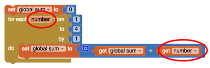
Sum is initially 0, then it adds 1, 2, 3, 4 with the loop and then stop. So the final number would be 10.
3) App Inventor’s random-integer block is an abstract model of randomness -- i.e., an abstraction of real randomness such as flipping a real coin. What would you say about the random-integer block if you ran the coin flipping simulation 10,000 times and the result was that it came up heads 55% of the time?
It would not be a good randomness model because with a large number of trials, it should comes up very close to 50% but it doesn not.
4.6 - Coin Flip Experiment
1) "(POGIL) According to your results, does App Inventor's PRNG provide a good model of randomness?"
App Inventor's PRNG does provide a good model of randomness because the results are close to 50%. After sum up the results from the whole class it gets more closer to 50%.
2) (POGIL) A friend claims that flipping a coin 100 times and finding that it comes up heads only 45% of the time shows that the coin is biased. How should you reply?
I think it is not bias because this friend only flipped 100 times and it is not enough trials to determine whether or not the coin is bias. This friend should do more trials in order to see if it's bias or not.
3) Because we are using a coin flip app, this experiment really tests only that App Inventor's random integer block generates a 1 around half the time. Is this a sufficient test for App Inventor's PRNG? What other experiments might you do to increase your confidence in App Inventor’s PRNG?
I think we can test numbers from 0 to 100 for a lots of times so I can see that if the apperance of all the numbers have the same distribution to see if it's truly random.
4.7 - Pseudo Random Numbers
1) Consider the following Dilbert cartoon? Would it be possible for a PRNG to spit out 6 NINEs in a row?
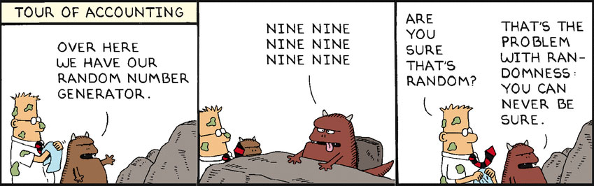
It is not very likely possible because algorithms of PRNG is usually designed to use an output as it's input so repetitions would not happen, except when it's algorithm starts to repeat itself.
2) Are slot machines fair? Why or why not?
Slot machines are not fair because all slot machines have return rate of less than 100% so the casino can win money, so this means that when the number of trials are big enough the players would lose money.
3) Is it possible to devise a method that would allow you to win consistently on a slot machine?
No, slot machines are determined base on PRNG and this can not be changed unless the hardware is editable.
4.8 - Real World Models
1) What are the main differences between Bill Nye's solar system model and the Second Life model?
Bill Nye's model is scaled in term of distance between the planets and the sun, but the Second Life model does not scale that.
2) (POGIL) What would happen if there were lots more wolves than there are bunnies? Would the wolves live forever? Record your hypothesis, prediction and experiment results.
The bunnies would be eaten by the wolves, then the wolves ran out of foods and dies. Grass lives forever
3) (POGIL) This model chose to include certain features and exclude other features. For example, this simulation only includes rabbits, wolves, and grass but there are other predators of rabbits and other food sources for rabbits. Why do you think the creators focused on these data elements and not others? How might this introduce bias (concentration on or interest in a particular area) into the simulation?
This model only choose grass, wolves, and rabbits because it’s an abstraction of nature so they ignore other things that affects rabbits, grasses, and wolves such that some predators might eat wolves too. This introduce bias because the abstraction tend to ignore other things that might be important in how nature works.
4.9 - Abstraction: Inside the CPU
1) "Which generation of the 4-bit simulators above is the most abstract? Why?"
The machine assembly simulator is the most abstract because it is able to use letters as instructions instead of purely 0 and 1.
2) Explain the purpose or function of the RAM and the CPU.
The RAM stores temporary data that should be fed into the CPU which then the CPU executes the instructions within the RAM to calculate and return the result.
3) Describe in your own words the difference between the fetch and execute steps.
Fetch is loading instructions in RAM into the CPU, execute is executes instructions stored in CPU so it works.
4) Summarize the differences between assembly language and machine language programming.
Assembly language uses letters and signs so it's easier for programmers to code the machine. Machine language programming uses purely 0 and 1s in the program so it's hard to see what the code is doing without looking at the instruction table.
4.10 Impacts of CS: Privacy
1) Is it possible to identify someone, perhaps a patient, knowing just the gender, birth date, and zip code? Why or why not?
No, there might be more than one person who has same gender, birth date within a zip code. But it greatly reduces the difficulty of finding this certain person because more infomations can help in locating a person.
2) Are electronic documents like paper documents? Write 2-3 sentences comparing and contrasting them.
No, electronic documents are stored electronically and paper document exists in reality. Paper documents are made up of paper and electronic documents are made up of 0 and 1s. It is easier to edit paper document then electronic documents.
3) Earlier in the course, you built the Map Tour app. In the final version, what kind of data is collected from the user? Does the user know the data is being collected? Can they opt out of providing data and still use the app?
The location of the user is being collected. I think the user know that their location data is being exposed. I don't think they can opt out because the map app would not be functional without the location of the user.
4) Is the Privacy Act effective? Explain why or why not.
I think it should be effective because it's better to have a Privacy Act than having no act at all. The act should protect privacy in some degrees.
5) Are you willing to trade some of your privacy for the convenience of having a computer or a company recommend products to you? Why or why not? Under what circumstances?
No, I would rather go on to different forums to see other people's opinion about a software product instead of seeing recommendation of products online.
6) How do we leave digital "footprints and fingerprints?" Do you think this is important for everyone to know? Why or why not?
We leave digital footprints by uploading infomation or pictures online when we don't even know we did this. I think it's important for everyone to know because that way people know their infomation is being exposed.
7) How have social media platforms such as Twitter, Instagram, Snapchat, etc. affected our privacy?
They expose people's location and activity onto the internet with pictures so other people can stalk and find information about the person.
8) In this course, you are building apps that collect data from users, the device, and its sensors. What responsibilities do we have as app developers for the data we collect?
We have to be careful to not leak informations out from the database so the data is only being used within the app and not other places.
9) Search the web for a recent news story that deals with privacy. LINK to the article and then write a paragraph summarizing the article, including any beneficial or harmful impacts on privacy.
The best way to privacy is to not put private information online such as passwords and usernames. Don't expose emails and phone numbers to insecure websites. Also, use encrypted connection while online.
Unit 5 - Algorithms & Procedural Abstraction
5.2 - Logo, Part 2
1) Include a screenshot of an interesting design that your Logo app made AND a screenshot of the code that created it.
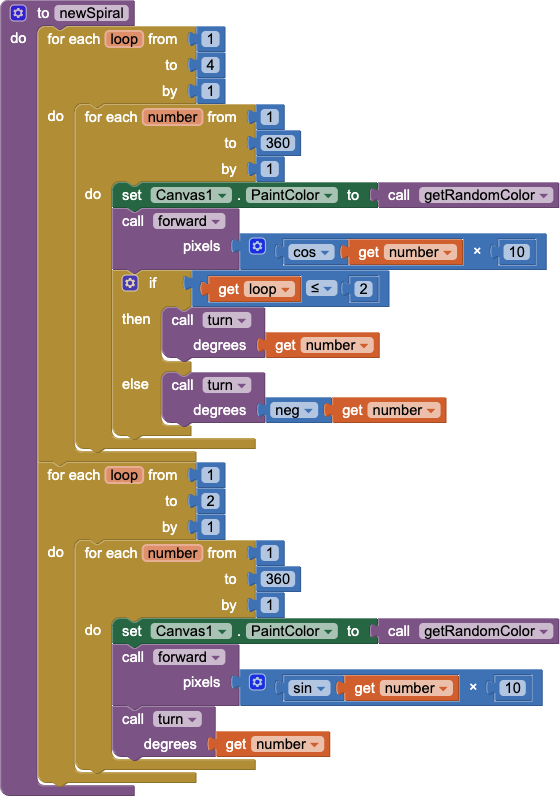
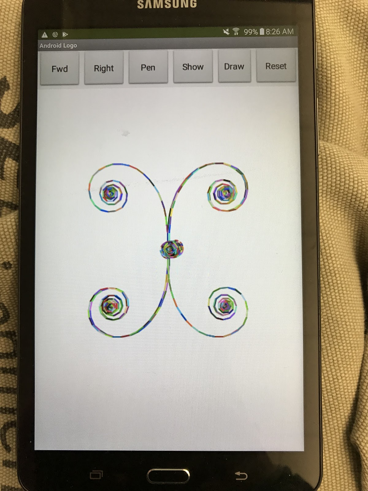
2) Describe in your own words, with a specific example from Logo, how our choice of abstractions (commands) in this lesson provides us with the ability to solve problems that couldn't be solved with the abstractions (commands) used in Logo Part 1.
The abstraction of rotate with parameters specified to set the angle of rotation provide an option for me to rotate in an angle other than 90 degree. Then the Logo machine can rotate at an angle like 120 degree to make triangle or any other polygon.
5.3 - Search Algorithms
1) (POGIL) Define a pseudocode algorithm that will efficiently play the guessing game.
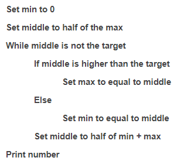
2) (POGIL) To guess a number between 1 and 100, what's the maximum number of guesses your algorithm would take?
The maximum number of guesses is 7 because 2^7 is 128 and 100 is less than 128, but it has to be bigger than 64 to find the number.
3) (POGIL) To guess a number between 1 and 500, what's the maximum number of guesses your algorithm would take?
The maximum number of guesses is 9 because 2^9 is 512 and 500 is less than 500.
4) Suppose you have a deck of cards and you want to find the Ace of Spades. If the deck is shuffled, which is the best search algorithm to use and why?
I would use linear search because there is no pattern in cards so binary search would not function since the deck is not sorted.
5) Give an example of a search problem you encounter in everyday life. Does it use sequential, binary, or some other search algorithm?
A search problem I use is when I search for different items to purchase in game. Since the prices of items are always sorted in game, I would use bucket sort to see different digits of the cost to find the item I want to buy.
5.4 - Sorting Algorithms
1) Bubble and Merge Sort are referred to as comparison sorts because the values of the two pieces of data are compared during each step. Why are the radix and bucket sort not comparison sorts?
Radix and bucket sort is not comparison sorts because they are essentially putting items in different categories instead of putting one item in front of another, that is why no comparison happens.
2) Which sort do you think would be the fastest if you had to sort more than one deck of cards? Why?
Bucket sort would be the fastest way because every card has 13 numbers and 4 suits, which would be very easy to sort with bucket sort since there is only a small amount of categories.
5.5 - Quiz App
1) Describe the significance of the global variable index. How is indexing used with lists in this app?
The global variable index is used to indicate the question that is currently rendering in the app. Since questions, answer, and pictures are stored in different lists, the index variable is required to keep check the current question.
2) Describe how parallel lists were used in this app. Why was the parallel structure of the lists necessary?
Parallel lists are questions, answers, and picture lists. This structure of lists are necessary because one list can only have one item at one index, thus it can not store multiple things at one index.
3) Include screenshots of your code for exercises 2 and 3 from the Enhancements section.
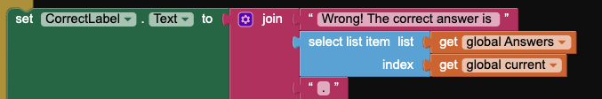
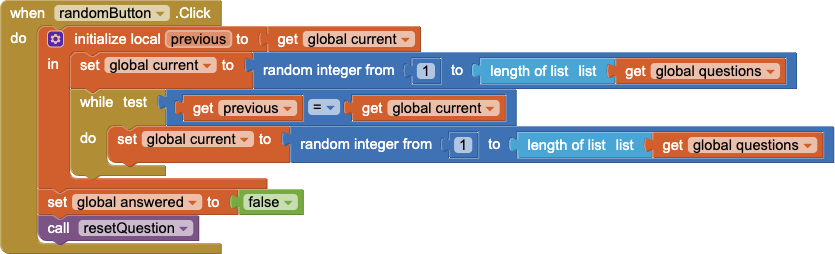
4) Include a screenshot of the code that added your extra question (exercise 4) AND explain why the code for the buttons worked without any changes after the addition of the extra question.
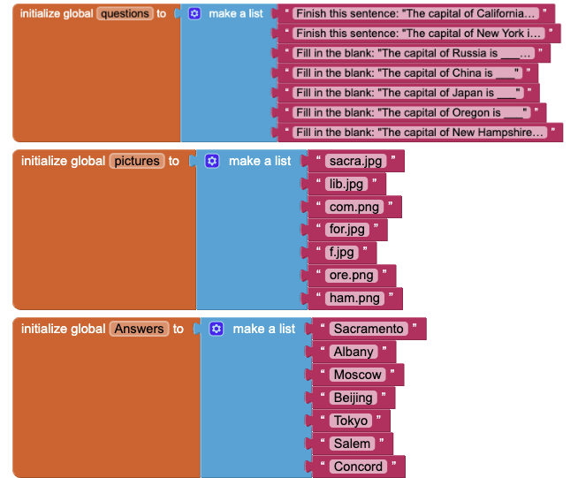
The button works for the extra question because the button automatically detects and fetch the question from the parallel lists according to index. Also, index would only reset to 1 after it has exceeded the length of the array, if the length increases then it would be reseted later.
5.6 - Quiz App Projects
1) Describe your solution for the second project that added a Search button. Provide a SCREENSHOT of the search button click code that uses a complex algorithm with loops and lists. Why was a loop necessary?
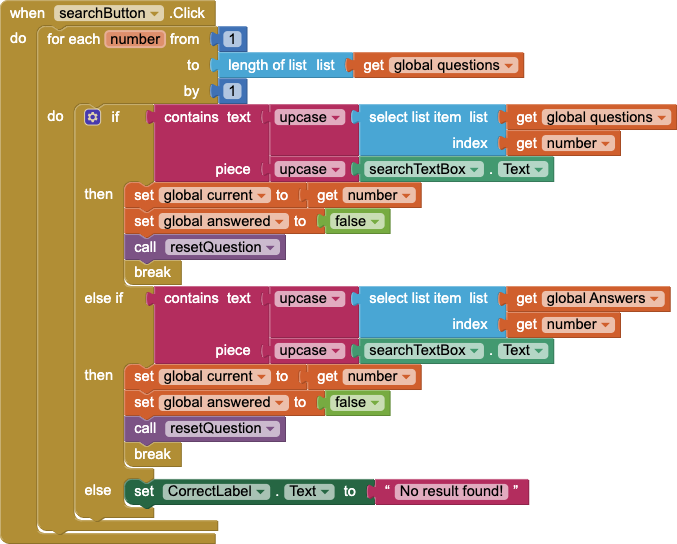
My solution is just search through the question and answer array and compare if the searching terms are inside the question or answer. A loop is necessary because the array is not sorted so linear search is the only way to go.
2) Write AP text-style pseudocode for a linear search that searches through a list to find an item x. It should display found if the x is equal to an item in the list.
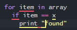
3) Give brief descriptions of the enhancements you added to your app for the third project, a quiz topic of your own choosing. Provide SCREENSHOTS of important blocks and describe how you used them to solve certain programming problems.
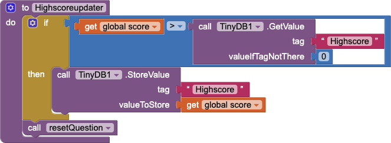
The enhancement for my app is that the app is able to display highscore to the user. The highscore keeps track of the user's high score and keeps it even when app is closed.
4) To practice for the Create project prompt, grab a SCREENSHOT of a program code segment from your project that implements an algorithm that includes two or more algorithms within it and includes mathematical and/or logical concepts. An ideal algorithm is a procedure that you created that includes calls to other procedures that you created, where at least one of those includes math or logic (ifs or loops). Describe how each of the two algorithms within the bigger algorithm functions independently as well as in combination to form a new algorithm. Basically, answer 2c!
This is the algorithm for the answer button. It’s main function is to determine if the answer in the text box is correct or not. It does this by simply comparing the text in the text box with the corresponding text in the “Answers” list. We also added the “upcase” and “trim” blocks to make sure that the text wouldn't have to be case sensitive and would disregard any peculiar spacings at the end of an answer, Which would then move on to the other part of the algorithm. The next part of the code is the point system and the parts of the app that tell the user that they are correct or not. If the user inputs text into the textbox that compares to the text in the answer list then it would update the global score by incrementing the variable by 1, which would also then change the score label to match the global score variable. Then the high score updater is called, the correct label is set to “correct!” and the “rightPlayer” would be called and that would play the ding sound to signify that the user is correct. If the user’s text does not compare then the algorithm would change the correct label text to “Wrong! The correct answer is…”, and play the incorrect buzzer sound to signify the user that they got the question incorrect.
5.7 - Analyzing Algorithms
1) Present the results and the analysis you did for each of the experiments in this lesson, -- i.e., the table of running times you observed, the graphs you created, and the conclusions you reached regarding the searching algorithms and sorting algorithms. Provide a clear description, referring to your graphs and your tabulated data (which are included, or linked to), to explain how you arrived at your conclusions.
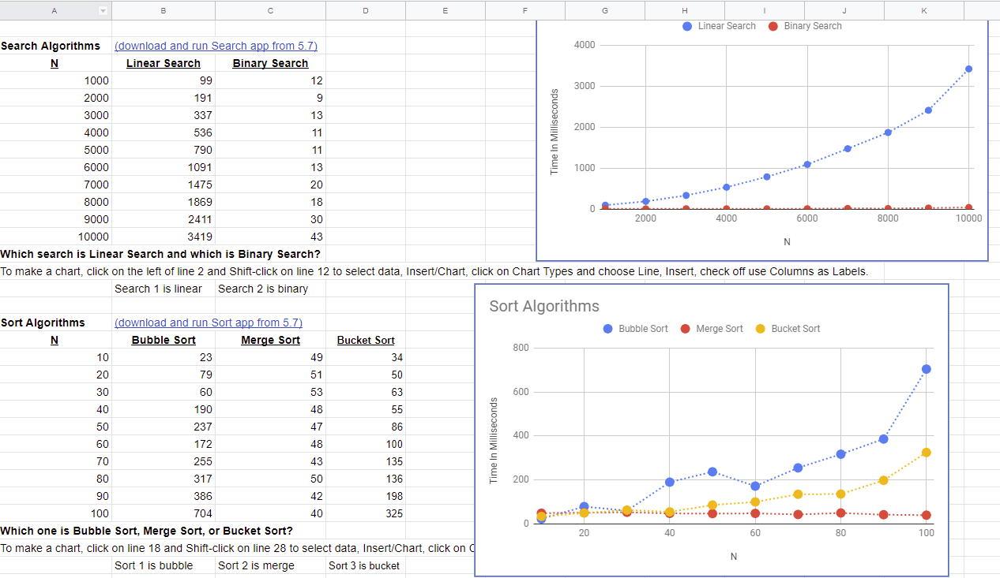
For searching algorithms, I found that algorithm 2 is significantly faster than algorithm 1, this is how I came to the conclusion of algorithm 2 is binary search. For sorting algorithm, I found that search 1 is very slow, search 2 is fast, and search 3 is medium speed. Since bubble sort is slowest I think it's search 1. Merge sort is the fastest so it is search 3, and the last one is bucket sort.
5.8 - Limits of Algorithms
1) (POGIL) A password scheme consists of a minimum password length and the different types of symbols (i.e., letters, numbers, specials) that can be used in the password. Using the Password Strength Calculator, determine the optimal scheme for withstanding a brute force attack of at least 10 years by an ordinary PC performing 100 million tests per second.
We need upper case letters, lower case letters, and numbers in the password. The password also needs to have at least 9 characters.
2) (POGIL) According to this 2012 article, a password-cracking computer can try 350 billion passwords per second. How would you have to modify your scheme to withstand a 10-year attack by this specially designed computer?
We need upper case letters, special characters and numbers in the password. The password also needs to have at least 11 characters. It needs 17.9 years to crack.
3) (POGIL) That article was written in 2012. Password cracking technology has probably gotten a lot better. Suppose the number of passwords that can be checked per second doubles every year, use the Password Strength Calculator to determine an optimal password scheme for the year 2020?
Since it doubles every year, it has doubled 8 times in 2020. It can check 89.6 trillion passwords per second. We need a scheme that has a length of 12 characters, and include upper case, lower case, numbers, and special characters. It would need 216.8 years to crack.
4) (POGIL) For the routes starting and ending at Trinity College, identify the nearest neighbor route and the optimal route. What does this show you about the nearest neighbor heuristic?
The nearest neighbor heuristic would be a good approach to finding the optimal solution but it is not the actual optimal solution because it prioritizes the fastest route at the time rather than the fastest route overall.
5.9 - Impacts of CS: Web Searches
1) How do web search tools make it more efficient to find information?
Web search tools indexes webpages so they are easier to find. Users can type in certain keywords and web search tools can give all the relevant results on the website.
2) When you type a word or phrase into the Google search engine, what is the search algorithm that is being used? Explain in your own words the process used by Google's search engine.
Google searches use binary search to find relative indexes in its database that stored all the cached websites. Then it ranks different websites by its relevance to the searching phrase then present them to the user.
3) What is a captcha? How has the collective efforts of Internet users contributed to analyzing images through captchas?
Captcha is used online to distinguish between human and bots to prevent griefing in comment sections of websites. It usually use some kinds of distorted image of numbers and/or letters that computer can not analyze. Internet users type in datas for the bots so they can analyze the image better.
4) "The architecture of human knowledge has changed as a result of search." Do you agree? Explain your reasoning.
I agree because knowledges are being placed online where everyone with internet access can retrieve. Searching has become the gateway for human to get certain types of knowledge because users only need to type in keywords to get knowledge.
5) What are the differences between Figures 4.10 and Figure 4.11 in the book? Why are there differences even though they are both a Google search results page?
The results of the searches are different even though the search query is the same. The reason that there are differences is because Google takes account of local regulation and culture as part of the algorithm in determining what results are given to the user.
6) How do you think mobile computing might have influenced web searches? Would you retain your search history or delete it? Why?
Mobile computing influence web searches because now every person can uses searching anywhere as long as they have internet access. This creates more demand for web searches because people can search on their mobile device when they don't know something.
7) Would you retain your search history or delete it? Why?
I retain my search history because I go to a lot of different websites, and I usually forgot most of them. Search histories help me remind what websites I went to because sometimes I would like to go back to them to find useful informations.
8) Should a researcher place absolute trust in a search engine? Why or why not?
No, researchers need to doubt a search engine because there are many different biases involved in search engine's algorithm. A researcher may need to use different search engine and compare and contrast to find the best result.
9) The authors claim "search is a new form of control over information" (p. 111) and "search is power" (p. 145). Why might it be important to talk about the social implications of searching on the Internet?
It is important to talk about the social implication of searching because searching is becoming the main way for regular people to reach informations. This causes search engine to have great power in controlling what people see and what people understand.
10) How have search trends been used to predict information? What are the positive and negative impacts of using trends to make predictions?
Search trends can be use to predict what people care about. One example would be searching positive or negative informations about a presidential candidate. Positive impact would be able to feed users the exact information they need. Negative impact would be privacy of users would be nonexistant.0
11) Find and read an article about web searches or algorithms. Write a 3-4 paragraph summary of the article. Include the author's name, the title of the article, the date it was published, and a link to the article.
Quicksort is an algorithm that, similar to merge sort, a divide and conquer algorithm. It picks one random element inside the list, called pivot, then move all numbers smaller than the pivot to the left of the pivot, and move all numbers bigger than the pivot to the right of the pivot. Then, all numbers on the left and right side of the pivot are sorted again using the picking the pivot method. After several iterations of this process, the array would be sorted after all. Picking the median number or a random number as the pivot of the array proved to be an efficient way to increase the efficiency of the algorithm.
Construction...
Construction...
Construction...
Construction...